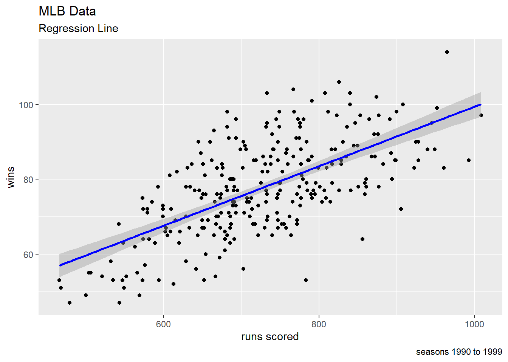
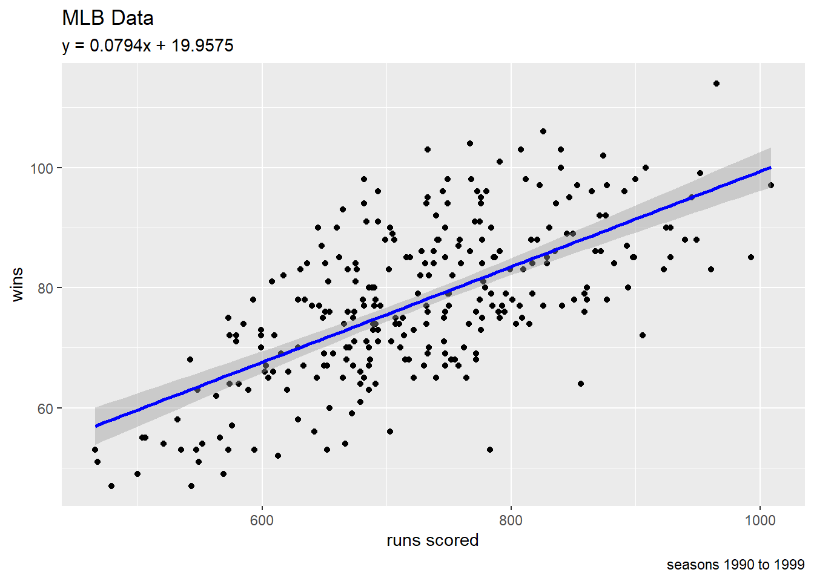
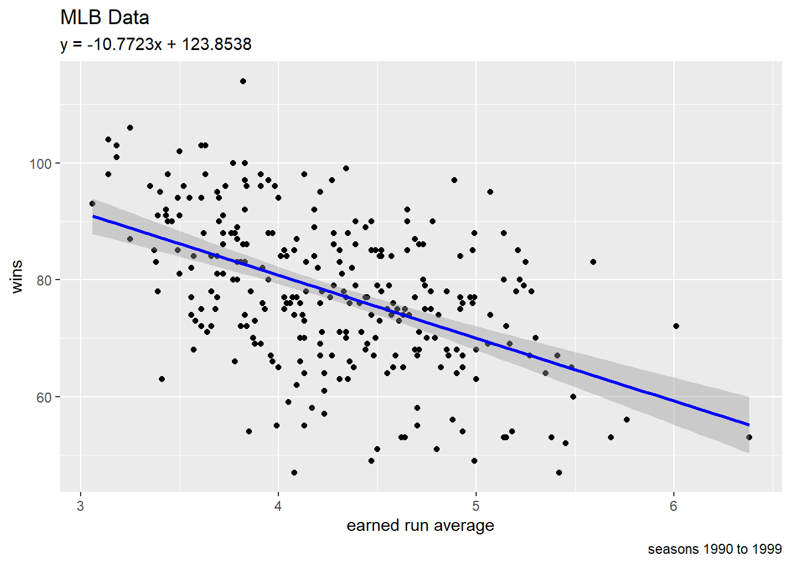

library("tidyverse")Load the Tidyverse
The tidyverse suite of packages are streamlined to make data science processes easier. We can load the packages with the library() command.
Load the Data
Since we have CSV files (comma-separated values), the read_csv() command in the readr package will be convenient here. I tend to save data set into a variable df (stands for “data frame”).
Today’s data set comes from the Lahman package, which contains a lot of historical data about Major League Baseball.
df <- readr::read_csv("baseball_data_90s.csv") |>
janitor::clean_names()Rows: 278 Columns: 48
── Column specification ────────────────────────────────────────────────────────
Delimiter: ","
chr (13): lgID, teamID, franchID, divID, DivWin, WCWin, LgWin, WSWin, name, ...
dbl (35): yearID, Rank, G, Ghome, W, L, R, AB, H, X2B, X3B, HR, BB, SO, SB, ...
ℹ Use `spec()` to retrieve the full column specification for this data.
ℹ Specify the column types or set `show_col_types = FALSE` to quiet this message.Look at the Data
One way to get a quick look at the data set is with the head() command (outputs the first few rows and columns).
head(df)# A tibble: 6 × 48
year_id lg_id team_id franch_id div_id rank g ghome w l div_win
<dbl> <chr> <chr> <chr> <chr> <dbl> <dbl> <dbl> <dbl> <dbl> <chr>
1 1990 NL ATL ATL W 6 162 81 65 97 N
2 1990 AL BAL BAL E 5 161 80 76 85 N
3 1990 AL BOS BOS E 1 162 81 88 74 Y
4 1990 AL CAL ANA W 4 162 81 80 82 N
5 1990 AL CHA CHW W 2 162 80 94 68 N
6 1990 NL CHN CHC E 4 162 81 77 85 N
# ℹ 37 more variables: wc_win <chr>, lg_win <chr>, ws_win <chr>, r <dbl>,
# ab <dbl>, h <dbl>, x2b <dbl>, x3b <dbl>, hr <dbl>, bb <dbl>, so <dbl>,
# sb <dbl>, cs <dbl>, hbp <dbl>, sf <dbl>, ra <dbl>, er <dbl>, era <dbl>,
# cg <dbl>, sho <dbl>, sv <dbl>, i_pouts <dbl>, ha <dbl>, hra <dbl>,
# bba <dbl>, soa <dbl>, e <dbl>, dp <dbl>, fp <dbl>, name <chr>, park <chr>,
# attendance <dbl>, bpf <dbl>, ppf <dbl>, team_idbr <chr>,
# team_i_dlahman45 <chr>, team_i_dretro <chr>We can also look at the structure of a data frame with the str() command. In particular, this view allows us to quickly see which variables are numerical and which are categorical.
str(df, give.attr = FALSE)spc_tbl_ [278 × 48] (S3: spec_tbl_df/tbl_df/tbl/data.frame)
$ year_id : num [1:278] 1990 1990 1990 1990 1990 1990 1990 1990 1990 1990 ...
$ lg_id : chr [1:278] "NL" "AL" "AL" "AL" ...
$ team_id : chr [1:278] "ATL" "BAL" "BOS" "CAL" ...
$ franch_id : chr [1:278] "ATL" "BAL" "BOS" "ANA" ...
$ div_id : chr [1:278] "W" "E" "E" "W" ...
$ rank : num [1:278] 6 5 1 4 2 4 1 4 3 4 ...
$ g : num [1:278] 162 161 162 162 162 162 162 162 162 162 ...
$ ghome : num [1:278] 81 80 81 81 80 81 81 81 81 81 ...
$ w : num [1:278] 65 76 88 80 94 77 91 77 79 75 ...
$ l : num [1:278] 97 85 74 82 68 85 71 85 83 87 ...
$ div_win : chr [1:278] "N" "N" "Y" "N" ...
$ wc_win : chr [1:278] NA NA NA NA ...
$ lg_win : chr [1:278] "N" "N" "N" "N" ...
$ ws_win : chr [1:278] "N" "N" "N" "N" ...
$ r : num [1:278] 682 669 699 690 682 690 693 732 750 573 ...
$ ab : num [1:278] 5504 5410 5516 5570 5402 ...
$ h : num [1:278] 1376 1328 1502 1448 1393 ...
$ x2b : num [1:278] 263 234 298 237 251 240 284 266 241 209 ...
$ x3b : num [1:278] 26 22 31 27 44 36 40 41 32 32 ...
$ hr : num [1:278] 162 132 106 147 106 136 125 110 172 94 ...
$ bb : num [1:278] 473 660 598 566 478 406 466 458 634 548 ...
$ so : num [1:278] 1010 962 795 1000 903 869 913 836 952 997 ...
$ sb : num [1:278] 92 94 53 69 140 151 166 107 82 179 ...
$ cs : num [1:278] 55 52 52 43 90 50 66 52 57 83 ...
$ hbp : num [1:278] 27 40 28 28 36 30 42 29 34 28 ...
$ sf : num [1:278] 31 41 44 45 47 51 42 61 41 41 ...
$ ra : num [1:278] 821 698 664 706 633 774 597 737 754 656 ...
$ er : num [1:278] 727 644 596 613 581 695 549 676 697 581 ...
$ era : num [1:278] 4.58 4.04 3.72 3.79 3.61 4.34 3.39 4.26 4.39 3.61 ...
$ cg : num [1:278] 17 10 15 21 17 13 14 12 15 12 ...
$ sho : num [1:278] 8 5 13 13 10 7 12 10 12 6 ...
$ sv : num [1:278] 30 43 44 42 68 42 50 47 45 37 ...
$ i_pouts : num [1:278] 4289 4306 4326 4362 4348 ...
$ ha : num [1:278] 1527 1445 1439 1482 1313 ...
$ hra : num [1:278] 128 161 92 106 106 121 124 163 154 130 ...
$ bba : num [1:278] 579 537 519 544 548 572 543 518 661 496 ...
$ soa : num [1:278] 938 776 997 944 914 ...
$ e : num [1:278] 158 93 123 142 124 124 102 117 131 131 ...
$ dp : num [1:278] 133 151 154 186 169 136 126 146 178 124 ...
$ fp : num [1:278] 0.974 0.985 0.98 0.978 0.98 0.98 0.983 0.981 0.979 0.978 ...
$ name : chr [1:278] "Atlanta Braves" "Baltimore Orioles" "Boston Red Sox" "California Angels" ...
$ park : chr [1:278] "Atlanta-Fulton County Stadium" "Memorial Stadium" "Fenway Park II" "Anaheim Stadium" ...
$ attendance : num [1:278] 980129 2415189 2528986 2555688 2002357 ...
$ bpf : num [1:278] 105 97 105 97 98 108 105 100 101 97 ...
$ ppf : num [1:278] 106 98 105 97 98 108 105 100 102 98 ...
$ team_idbr : chr [1:278] "ATL" "BAL" "BOS" "CAL" ...
$ team_i_dlahman45: chr [1:278] "ATL" "BAL" "BOS" "CAL" ...
$ team_i_dretro : chr [1:278] "ATL" "BAL" "BOS" "CAL" ...Another convenient tool for our programming purposes is looking at the column names (i.e. variable names that we need to type later)
colnames(df) [1] "year_id" "lg_id" "team_id" "franch_id"
[5] "div_id" "rank" "g" "ghome"
[9] "w" "l" "div_win" "wc_win"
[13] "lg_win" "ws_win" "r" "ab"
[17] "h" "x2b" "x3b" "hr"
[21] "bb" "so" "sb" "cs"
[25] "hbp" "sf" "ra" "er"
[29] "era" "cg" "sho" "sv"
[33] "i_pouts" "ha" "hra" "bba"
[37] "soa" "e" "dp" "fp"
[41] "name" "park" "attendance" "bpf"
[45] "ppf" "team_idbr" "team_i_dlahman45" "team_i_dretro" Linear Regression
A scatterplot plots points on a graph where both the horizontal and vertical axes are numerical variables.
df |>
ggplot(aes(x = r, y = w)) +
geom_point() +
geom_smooth(method = "lm", color = "blue") + #makes the regression line
labs(title = "MLB Data",
subtitle = "Regression Line",
caption = "seasons 1990 to 1999",
x = "runs scored",
y = "wins")`geom_smooth()` using formula = 'y ~ x'
# linear model (think "y = mx + b")
lin_fit <- lm(w ~ r, data = df)
m <- lin_fit$coefficients[2]
b <- lin_fit$coefficients[1]
df |>
ggplot(aes(x = r, y = w)) +
geom_point() +
geom_smooth(method = "lm", color = "blue") + #makes the regression line
labs(title = "MLB Data",
subtitle = paste0("y = ", round(m,4), "x + ", round(b, 4)),
caption = "seasons 1990 to 1999",
x = "runs scored",
y = "wins")`geom_smooth()` using formula = 'y ~ x'
Making Predictions
Example: How many wins do we expect for a baseball team that scores 800 runs in a season?
lin_fit <- lm(w ~ r, data = df)
predict(lin_fit, newdata = data.frame(r = 800)) 1
83.48385 We predict about 83.48 wins for a baseball team that scores 800 runs in a season.
Another Example
Example: How many wins do we expect for a baseball team whose pitching ERA (earned run average) is 4.00?
# linear model (think "y = mx + b")
lin_fit <- lm(w ~ era, data = df)
m <- lin_fit$coefficients[2]
b <- lin_fit$coefficients[1]
df |>
ggplot(aes(x = era, y = w)) +
geom_point() +
geom_smooth(method = "lm", color = "blue") + #makes the regression line
labs(title = "MLB Data",
subtitle = paste0("y = ", round(m,4), "x + ", round(b, 4)),
caption = "seasons 1990 to 1999",
x = "earned run average",
y = "wins")`geom_smooth()` using formula = 'y ~ x'
lin_fit <- lm(w ~ era, data = df)
predict(lin_fit, newdata = data.frame(era = 4)) 1
80.76459 We predict about 80.76 wins for a baseball team whose season ERA is 4.00.
Exercises
Load your data set (for your sport) using the read_csv command and save the data frame as df.
Use the head, str, and colnames commands to look at your data set.
Today, we are building linear regression models and making predictions in two scenarios from your sports data.
Scenario 1
- describe what is on the \(x\) axis:
- describe what is on the \(y\) axis:
Build a scatterplot, and use a geom_smooth layer to draw a linear regression line.
Use the lm and predict functions to carry out a prediction in this scenario (i.e. you choose a reasonable number for \(x\)).
- describe your prediction:
Scenario 2
- describe what is on the \(x\) axis:
- describe what is on the \(y\) axis:
Build a scatterplot, and use a geom_smooth layer to draw a linear regression line.
Use the lm and predict functions to carry out a prediction in this scenario (i.e. you choose a reasonable number for \(x\)).
- describe your prediction:
Wrap Up
- Click
Renderto create the HTML file - Check the checkbox next to the HTML file (in the Files pane)
- Click the gear (“More”), and then click “Export”
- Upload the HTML file back into our CatCourses space